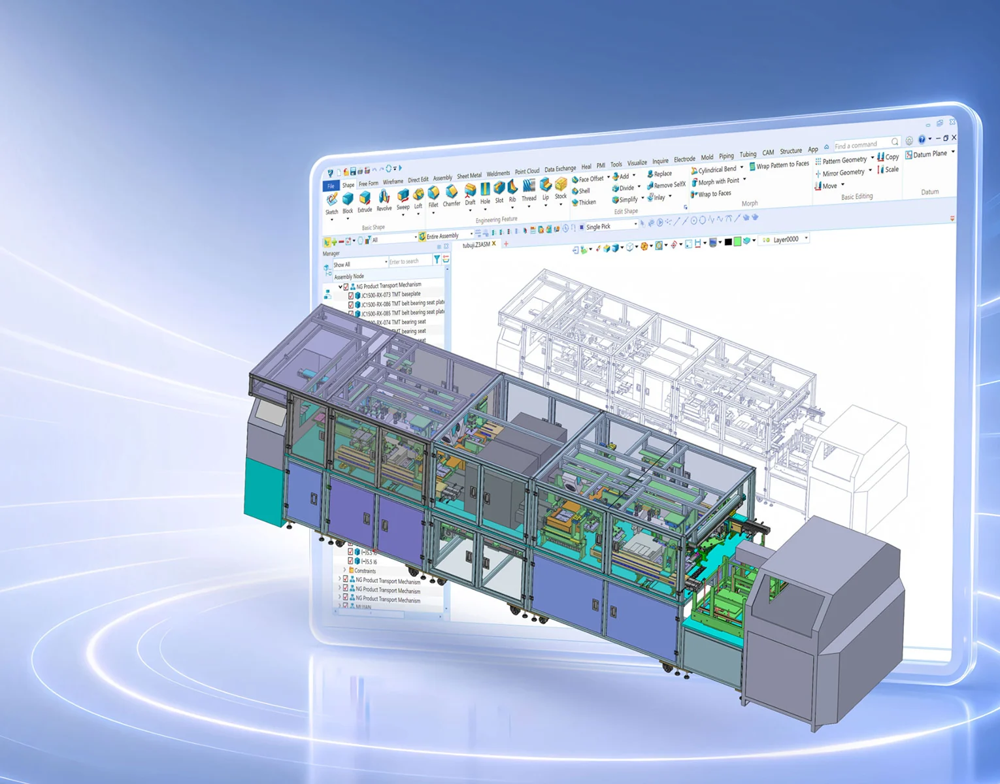
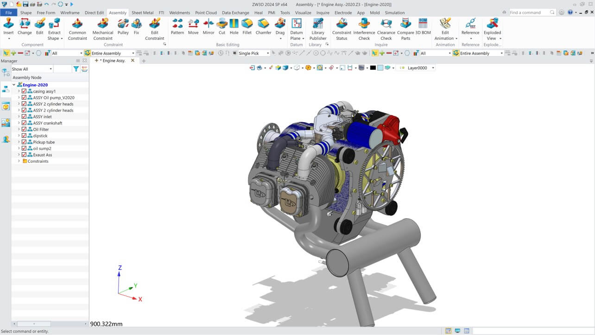
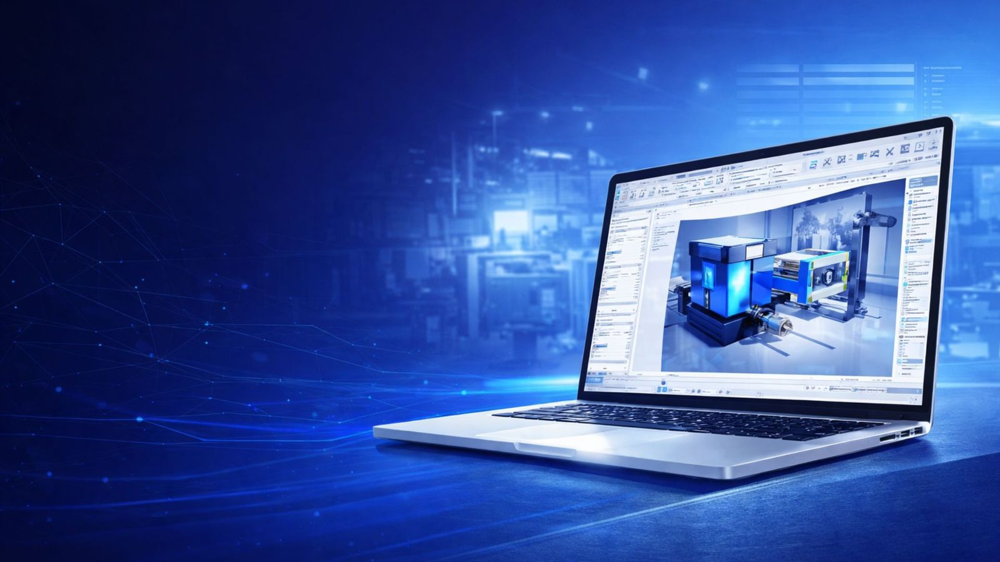

Rancang mesin lebih cepat
Part, assembly, drawing, validasi, dan manufaktur dalam satu toolset profesional — tanpa serah-terima file antar aplikasi.
Dari konsep mesin ke lantai produksi — dalam satu lingkungan.
Part, assembly, drawing, simulasi, CAM, dan data engineering bekerja di atas geometri yang sama. Perubahan desain tidak lagi memicu pengejaran file manual di setiap divisi.

Tim mesin tidak butuh satu alat lagi. Mereka butuh alur kerja yang tidak memutus informasi antara desain, validasi, produksi, dan data produk. ZW3D menyatukan semuanya di atas geometri yang sama.
Bukan karena daftar fitur terpanjang, tetapi karena keputusan engineering, deliverable, dan pengetahuan tim tetap terhubung sepanjang siklus produk.
Part, assembly, drawing, validasi, dan manufaktur dalam satu toolset profesional — tanpa serah-terima file antar aplikasi.
Drawing, simulasi, CAM, dan data produk mengikuti perubahan desain secara associative. Handoff manual berkurang.
Model, metode, standar, dan library yang sudah terbukti dapat dipakai ulang di program mesin berikutnya.
Perpetual, floating, dan adopsi bertahap. Pilih jalur yang sesuai anggaran, infrastruktur, dan kecepatan tim.
Enam tahap kerja, satu geometri. Pilih tahap untuk melihat kemampuan yang tersedia di dalam ZW3D.
Kombinasi parametric, direct, dan surface modeling di atas kernel 3D Geometric Modeling Overdrive™.
Ubah dimensi atau constraint, lalu feature turunan ikut diperbarui tanpa menggambar ulang.
Tarik, offset, atau hapus face pada model dari supplier tanpa membangun ulang feature tree.
Kontrol continuity dan trimming untuk casing, panel, serta bentuk organik yang sulit dimodelkan dengan solid biasa.
Simpan varian ukuran atau opsi dalam satu model; ganti konfigurasi tanpa menduplikasi file.
Aktifkan modul sesuai disiplin tim tanpa berpindah aplikasi atau menyalin geometri.
Rekan non-CAD dapat membuka, memutar, dan memeriksa model langsung di browser tanpa instalasi.
Kelola mesin kompleks dengan tools yang mempercepat penempatan komponen dan menjaga akurasi.
Mode lightweight menjaga rotasi dan navigasi tetap responsif saat ribuan komponen dibuka bersamaan.
Geser komponen di assembly; constraint terkait menyesuaikan tanpa update manual satu per satu.
Sistem mengenali lubang dan menempatkan fastener standar yang sesuai, mengurangi pemasangan berulang.
Pakai ulang komponen standar dan tambahkan part library internal agar penamaan serta ukuran tetap konsisten.
Jalankan pemeriksaan benturan sebelum rilis untuk menemukan tabrakan yang sulit terlihat secara visual.
Buat exploded view dan animasi urutan rakit untuk presentasi, BOM, atau instruksi perakitan.
Dokumentasi produksi dibuat lebih cepat, dengan tautan associative ke model 3D dan standar anotasi yang konsisten.
Ubah model 3D, dan view, dimensi, serta anotasi di drawing ikut diperbarui.
Buka dan simpan DWG/DXF secara native; drawing 2D tetap terhubung ke model ZW3D.
Sematkan dimensi dan toleransi manufaktur pada model agar data 3D siap dipakai di proses hilir.
Standarkan simbol, catatan, dan format anotasi agar setiap drafter menghasilkan drawing yang konsisten.
Hasilkan banyak drawing, view, atau format ekspor sekaligus saat menyiapkan paket rilis.
Buat view proyeksi, section, dan detail dengan cepat dari model yang kompleks.
Simulasi terintegrasi untuk keputusan desain yang lebih cepat dan biaya prototipe yang lebih rendah.
Meshing, boundary condition, dan solve dijalankan di jendela yang sama dengan model CAD.
Geometri dari model desain langsung dipakai untuk simulasi, tanpa ekspor-impor ulang.
Pilih analisis struktur, getaran, perpindahan panas, atau fatik sesuai pertanyaan desain.
Gabungkan hasil termal dan struktural untuk melihat dampak beban gabungan pada desain.
Tukar model dengan solver lain lewat format BDF dan INP yang umum di industri.
Impor model simulasi lama dan lanjutkan analisis tanpa membangun ulang setup.
Strategi pemesinan lengkap dengan simulasi dan post-processing yang dapat disesuaikan.
Pilih strategi roughing, finishing, dan drilling untuk part prismatik hingga permukaan kompleks.
Roughing berbasis VoluMill memangkas waktu potong dan konsumsi tool pada material yang menantang.
Sesuaikan post-processor untuk kontroler CNC dan format output yang dipakai lantai produksi.
Perubahan CAD memicu update toolpath; file pihak ketiga juga bisa diedit dengan toolpath tertaut.
Simulasikan jalur tool untuk mendeteksi gouge, collision, dan sisa material sebelum mesin dijalankan.
Jalankan simulasi mesin lengkap untuk memeriksa gerakan spindle, tool changer, dan fixture.
PDM tertanam di dalam ZW3D, sehingga kolaborasi dan rilis data tidak memerlukan platform terpisah.
Check-in, rilis, dan pencarian data dilakukan dari panel yang sama dengan desain.
Tim non-engineering dapat membuka data produk lewat browser tanpa memasang ZW3D.
Atur folder tim, hak akses, dan struktur proyek agar semua orang bekerja dari versi yang sama.
Check-in/check-out mengelola revisi minor; rilis mayor dikunci dan diberi otorisasi.
Komentar ber-thread dan histori persetujuan tersimpan bersama model, bukan di email terpisah.
Batasi akses berdasarkan peran dan status proyek untuk melindungi data sensitif.
Satu perubahan desain seharusnya tidak memicu perburuan file manual di setiap divisi. Di ZW3D, dampaknya menjalar ke deliverable yang tepat secara otomatis.
Sketsa, layout, dan studi bentuk awal.
Part, assembly, dan konfigurasi varian.
Simulasi struktur, termal, dan fatik.
Drawing, CAM, dan simulasi mesin.
PDM, versi, review, dan rilis.
Panel properti, area grafis, dan struktur komponen bekerja pada file yang sama. Tidak ada jendela aplikasi lain yang perlu diikuti.

“Revisi model dulu berarti mengulang drawing dan menyusun ulang toolpath. Sekarang satu perubahan mengalir ke semuanya — dan tim produksi melihat versi yang sama.”
Daftar harga distributor resmi dalam IDR untuk lisensi perpetual. Network license dan konfigurasi khusus dihitung terpisah sesuai kebutuhan tim.
*Harga distributor resmi ZW3D Indonesia untuk lisensi Standalone. Network license tersedia dengan harga terpisah. Konfigurasi hardware memengaruhi spesifikasi yang disarankan.
Jawaban singkat untuk pertanyaan teknis dan komersial yang paling sering muncul sebelum beralih ke ZW3D.
ZW3D adalah software engineering 3D untuk manufaktur mesin. Di dalamnya tersedia CAD, CAE, CAM, dan PDM yang saling terhubung, sehingga tim dapat bergerak dari desain menuju produksi dengan lebih sedikit handoff.
Ya. ZW3D menggabungkan pemodelan part dan assembly, drawing 2D, simulasi struktur/termal/getaran/fatik, serta strategi CAM 2–5 axis dalam satu lingkungan. PDM juga tersedia terintegrasi.
ZW3D mendukung workflow assembly hingga 20.000 komponen dengan teknologi lightweight. Performa aktual bergantung pada kompleksitas geometri, RAM, GPU, dan konfigurasi workstation.
Bisa. ZW3D mendukung 25+ format impor/ekspor, termasuk STEP, IGES, Parasolid, dan format CAD komersial. Geometri impor dapat diedit langsung tanpa feature history aslinya.
ZW3D dapat menyinkronkan drawing 2D dengan file DWG/DXF ZWCAD secara associative. Ini memudahkan tim yang memakai ZWCAD untuk dokumentasi 2D dan ZW3D untuk desain 3D.
Tersedia trial 30 hari. Kami juga menyelenggarakan demo terarah menggunakan file atau studi kasus tim Anda, sehingga evaluasi dilakukan pada workflow nyata — bukan hanya model contoh.
ZW3D untuk desain mesin, simulasi, CAM, dan data produk. ZWCAD untuk drafting dan dokumentasi 2D yang tetap terhubung lewat DWG.
Drafting 2D, dokumentasi DWG, dan alur kerja familiar untuk arsitektur, sipil, dan manufaktur.
Part, assembly, drawing, simulasi, dan toolpath di atas satu geometri yang sama.

Demo 45 menit: part, assembly, drawing, dan toolpath dari file Anda sendiri.
Tim sales dan technical support kami berbasis di Bekasi. Silakan berkunjung untuk konsultasi lisensi, demo produk, atau diskusi implementasi.